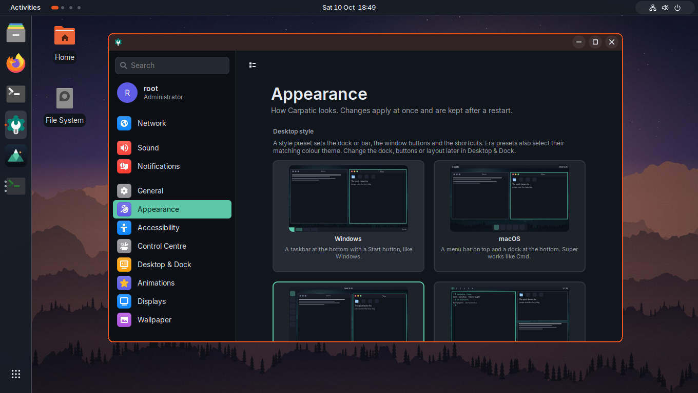

A place for every window.
Native tiling, floating windows and workspaces. A flexible starting point for a desktop that feels natural.
An independent desktop, taking shape
A considered Linux desktop, inspired by the Carpathians.
Built on Alpine. Shaped with Rust. Made for everyday life.
Rooted in Romania. Designed for a simpler day.
Room for what matters
Keep a clear view of your work. Arrange windows side by side, float the things you need close, and move between workspaces without losing your place.

Native tiling, floating windows and workspaces. A flexible starting point for a desktop that feels natural.
Settings, visual styles and everyday controls are being brought together around clear, familiar interactions.
Clear window controls, deliberate motion and a workspace that adapts to the way you work.
Less ceremony. More doing.
Local by design
Open Reminders from the taskbar calendar. Save a task, choose its date and time, and get a local notification when it is due. Your reminders stay on your computer.
Your day, kept close. Local reminders work without an online account.
A friendly direction
The goal is straightforward: ordinary tasks through clear graphical controls. Appearance, wallpaper, sound, networks and displays have dedicated Settings journeys.
One familiar place to make the desktop your own. Hardware support for this development preview is described below.
What is ready today?A deliberate foundation
Alpine Linux provides the base. An original Rust X11 window manager shapes the desktop, with a master-and-stack workflow and native window controls.
Low memory use and responsive interactions guide the engineering. Resource measurements and hardware testing shape each development build.
Follow the first steps
Carpathian OS is in early development. Explore the desktop and try the first experimental installer in a disposable virtual machine.
An experimental x86_64 installer for isolated testing. Everyday-use and hardware qualification are still in progress.
Intended for isolated testing. See the preview questions for installation and hardware guidance.
Download development ISO Verify SHA-256 checksum Explore the sourceBefore you begin
Not yet. Rendering, animations, hardware support, updates and recovery still have open qualification work. The development installer is intended for isolated testing. Keep your existing system and important data separate.
The aim is to make everyday setup and use work through graphical controls. That includes appearance, files, networking, sound and display configuration. This whole experience is still being tested; development and troubleshooting currently include command-line work.
The development section links to the experimental x86_64 ISO and its SHA-256 checksum. Release notes are available on GitHub. The installer boot environment still carries the earlier Carpatic name.
Current evidence comes from isolated Alpine x86_64 virtual machines. Physical GPU, wireless, Bluetooth, audio, sleep and installation support still need qualification. Minimum RAM and storage recommendations will follow measured hardware tests.
Low resource use is a core goal. We are measuring the whole desktop and will publish results alongside tested hardware guidance.
Carpathian OS is an independent project by Vali Neagu. You can also explore LinPad, another project from the same maker. The original code is open source under MIT; third-party components retain their licenses.
From the Carpathians, forward.